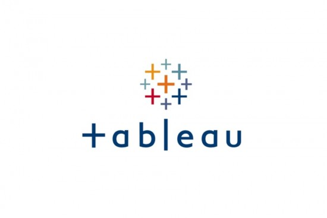
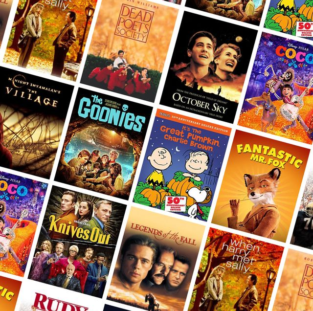

Hien Do - Who am I?
I am a Vietnamese girl who desires to leave an imprints in the lives and make it becomes a remarkable journey.
Favorite philosophies:
"Better is not something you wish, it's something you become" - Jim Rohn
"If you will change, everything will change for you" - Jim Rohn
Projects
-
Data Manipulation
Using Python tool in VScode to manipulate the survey data, organizing and giving new output to answer customers' expectation.
-

Covid 19
Data investigationThe SQL tool is used to analyse this project in order to draw information about the death case and highlight some significant COVID-19 information.
-

Tableau Visualization
Using tableau to build the dashboard that showed the sales insight of Walmart.
-

Exploring Movies Data
Python is used to clean and analyse the correlations of gross earnings with other factors. The result illustrated that budget and votes highly impact to gross earnings.
-
Analyze Sales of Tech Devices
Python is used to find out the answers of the best selling month, product and cross-selling products.
Blog
Sharing what I've learned on my path to becoming a data analytics specialist.
- Excel
- SQL
- Python
- Tableau
SQL, Excel, Python, and Tableau are just a few of the technical skills required for data analysis, and becoming a successful analyst will necessitate far more. Statistical analysis and analytical thinking are also important. The questions will affect how we approach the dataset, the tools we use, the size of the sample, and so on, because they are based on how we think about it. And by accumulating them over time, we will be able to obtain all of them. This blog is simply a record of my current knowledge, which will be updated as time goes on. I hope that this will provide value to the individuals that the website reaches, especially beginners. I understand because I've gone down this road before. If you find these postings useful or would want to discuss them further, please connect with me on LinkedIn or send me an email. I'd like to make new friends so that we can all learn together.